Somewhere in Nevada...
(For the record, I use the term "Sanmos" to refer to Sanford and Deimos as a unit, not necessarily as a shipping thing. Not that I mind the shipping or anything.)
 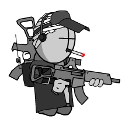
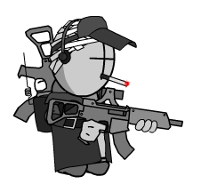
Sanford and Deimos are two characters (pictured above) from the online animated series Madness Combat. It's a super cool and violent series made by Krinkels following Hank J. Wimbleton, a guy who is so widely hated there is an entire agency dedicated to stopping him (A.A.H.W., "Agency Against Hank Wimbleton"). Sanford and Deimos are two of his three known allies and made their first appearance in Madness Combat 5: Depredation back in March 24, 2005.

The boys make their TRUE appearance in Madness Combat 9: Aggregation (released March 15, 2009), donning their regular outfits. Later that year, Krinkels would make Madness Combat 5.5 and 7.5 in order to flesh out Sanmos a bit more and show what they were up to after getting crushed by that building earlier on. Way way later on in 2018, Deimos got his own little miniseries showing what happened after the events of Aggregation. (I won't spoil any of it :3)
OK, what's the big deal then?
I really really love Sanmos since I'm a huge sucker for duos, and don't even get me started on TRIOS. We know alot about Hank since he's the main protagonist of the series, but there's not too much we can glean about Sanford and Deimos. It's not known what they were doing before their first appearance or their relation to Hank, other than as coworkers. According to wanted posters seen of them throughout the series, Deimos is referred to as a "traitor" and "smoker" while Sanford is a "torturer" and "ugly" (allegedly). Other than that, we can't even be sure of what their personalities are like: Deimos seems sort of playful while Sanford seems a bit more serious.
There's something kinda cool about the mystery surrounding these two, y'know????
That is also not to mention how neat I think their designs are. Krinkels is so good at making these detailed tactical designs stand out in a way that I haven't seen from very many other artists. You can already tell by looking at the sprites but the detail gets ramped up ALOT with his human designs for the characters but still looks nice. It's detailed but not cluttered. You know? Although upon first impression, I was mainly won over by Sanford's design. I'm a sucker for those John Lennon-type shades and that he just has a lip for some reason. Deimos also has a pretty cool design in my opinion, it's mainly the details of his fit that got me interested (his backpack, the hat/visor) and his Dedmos transformation. Also smoker characters always look cool (smoking is bad for real though!)
Regardless, I've grown so fond of these guys and their partnership that I tend to think about them and draw them alot. I am simply obsessed. I came up with these human designs in July 2021 and have fallen in love with them. I've pretty much been drawing them endlessly ever since. They are also blank enough slates for me to make up my own characterisations which I find extremely fun to do... pages and pages of headcanons I have saved. It's going to be pretty funny when Project Nexus comes out and I have to throw out just about every single idea I'd came up with.
Project Nexus Update
Since Project Nexus 2 came out, there has been a bit more revealed about Sanford and Deimos! It turns out the two are from an organization called S.Q. (Status Quo), which is seemingly led by Doc, also known as 2BDamned. A few lines from the game imply they have known each other for a very long time, presumably working at S.Q. for most of that time. They have some really good chemistry that makes them seem more like friends than just simply coworkers. They actually didn't know Hank up until Doc put him on the team to destroy Project Nexus, so their alliance is purely because Hank agreed to cooperate with S.Q. for the mission. For their individual traits, Deimos is proficient with computers and does alot of hacking into computer systems while Sanford is a demolitions expert and can easily put together a makeshift bomb. Their personalities are also solidified a bit more, with Deimos' lightheartedness very much on display as he makes jokes and goes on unrelated tangents during their missions together. On the flip side, while he isn't really stern about it, Sanford focuses much more heavily on getting the mission at hand completed and doesn't entertain Deimos' behavior all that much.
We still have very little understanding of what their motivations are other than just following Doc's orders. They do have a vested interest in keeping Nevada safe (or, at least not completely destroyed) as shown by the conversation they have minutes before the final fight of Story mode. However, neither of them seem to know much of what is going on and mostly just seem to be following orders, although both show a good amount of curiosity about the grand scheme of things. Swain (the lead programmer) made a comment about the current ending just being a placeholder, so we'll see if we ever get any new info on the two...
REAL LIFE SANMOS!!!!
On Madness Day 2022, I got a message from one of my Twitter mutuals saying that my Sanmos designs were made canon. I had no clue what they were talking about until they sent me a link to THIS promotional video for Project Nexus...
For those who don't know, Skel Studios is a live action production studio led by Chase Langley (@input_unknown) and Hans Van Harken (@hansvanharken). At first I'm pretty sure they were just making fan Madness content, until they ACTUALLY partnered with Gibbing Tree to make promo material for Project Nexus! In fact, they ended up making another, longer trailer on December 16th the same year, featuring other characters like the Sheriff, Dr. Christoff, and others!
Now, obviously, I'M not saying that my designs are quite literally the reason the casting turned out this way (even though I KNOW Hans has seen my designs). It's just a fun little "easter egg" of sorts I wanted to share here! I mean the tank top, the durag, HIM BEING BLACK!! When I first shared my Sanmos designs, I got some weird feedback specifically on my Sanford design - some people were making comments like "I never imagined Sanford as black" and "Of course in 2021 they're making him black", plus some overtly racist comments. Seeing an actual black person playing Sanford and KILLING IT was just so refreshing - and, I guess, healing? - after all the weirdness I endured over a design choice.
{kind=link}
Art gallery
 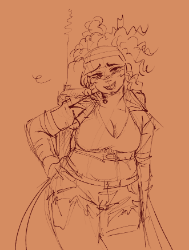
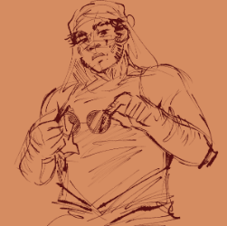
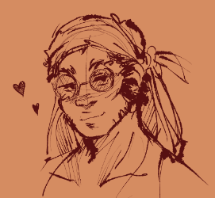
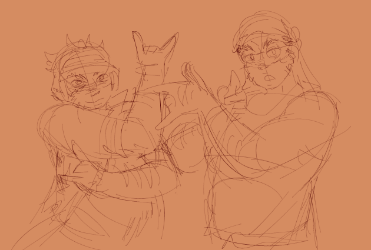
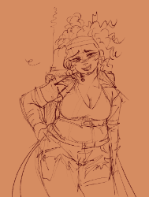
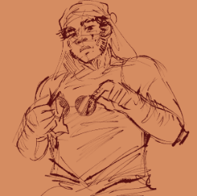
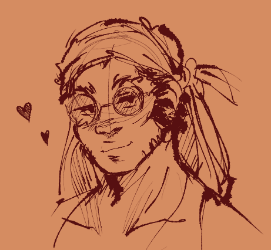
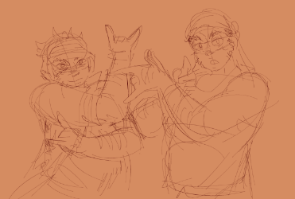
{kind=link}
{kind=link}
{kind=link}
{kind=link}
 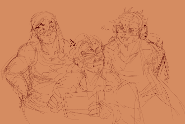
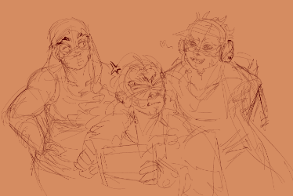
{kind=link}


 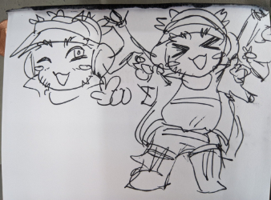
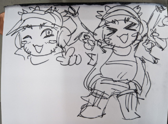
{kind=link}
 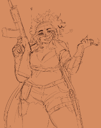
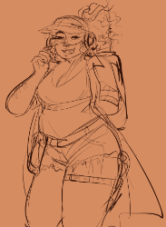
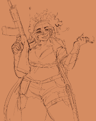
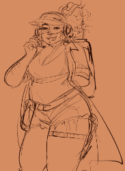
{kind=link}
{kind=link}
 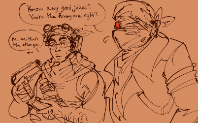
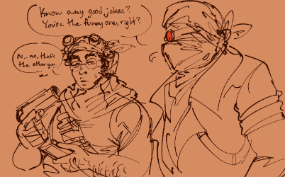
{kind=link}
 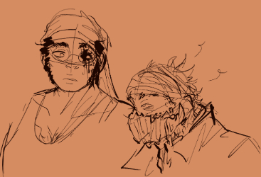
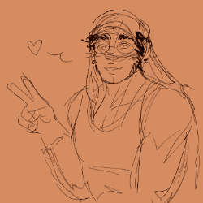
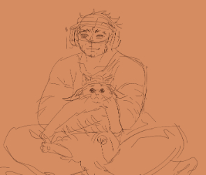
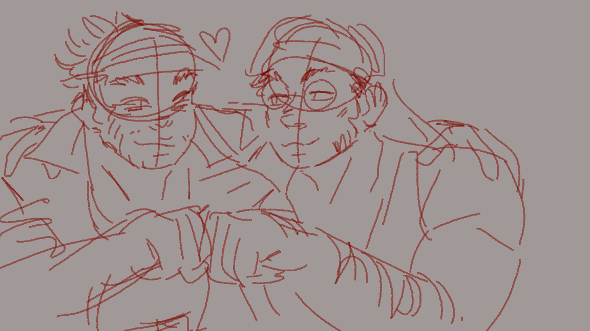
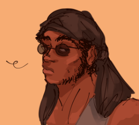
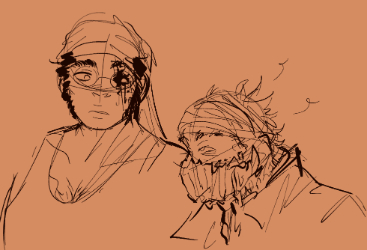
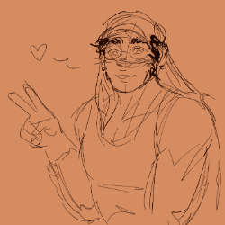
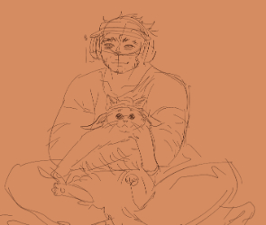
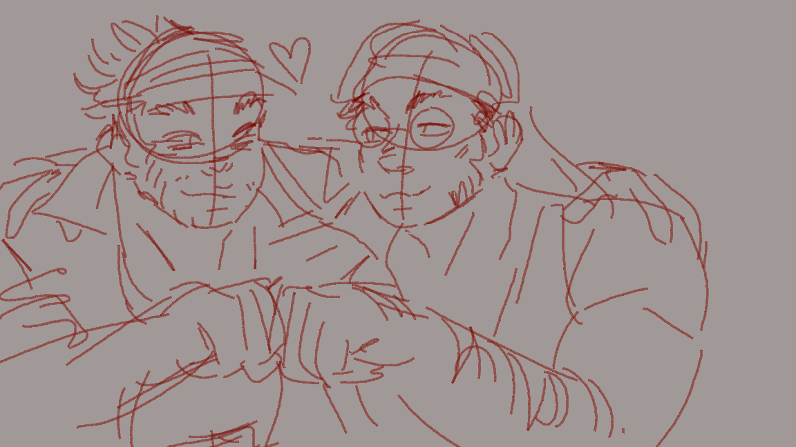
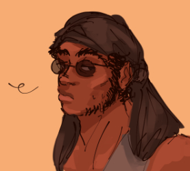
{kind=link}
{kind=link}
{kind=link}
{kind=link}
{kind=link}
 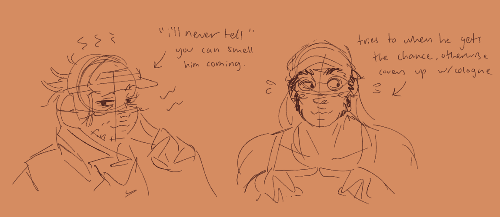
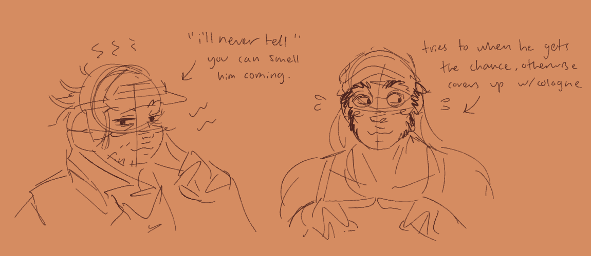
{kind=link}

 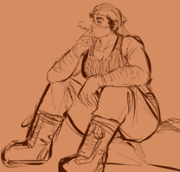
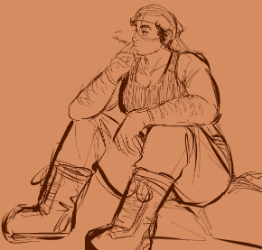
{kind=link}


 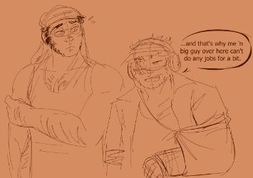
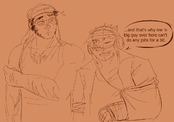
{kind=link}
 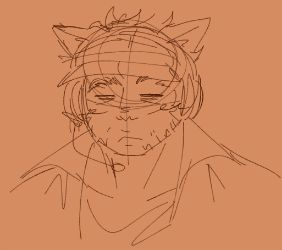
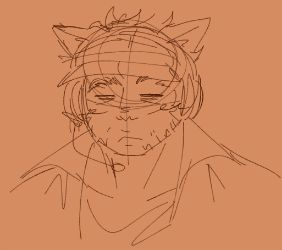
{kind=link}

 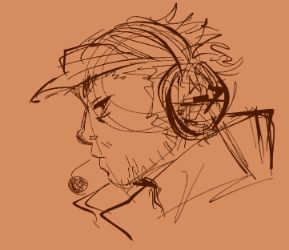
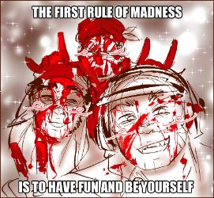
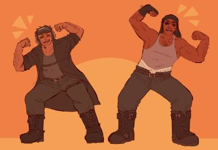
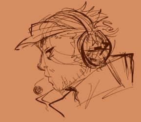
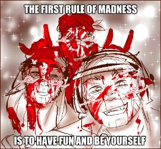
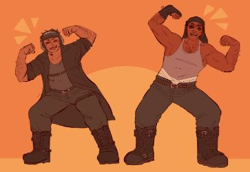
{kind=link}
{kind=link}
{kind=link}

 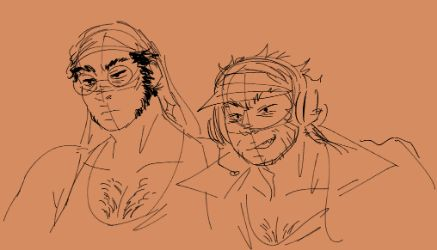
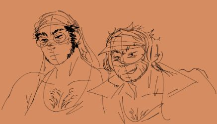
{kind=link}


![A full body drawing of two men on a neutral background. To the left is Sanford, the taller one, with one hand on his hip and the other holding a hook. Sanford is wearing circle-shaped sunglasses, a dark grey durag, a light grey tank top, camoflauge-patterned cargo pants, and black boots. There are bandages wrapped around the lower part of his waist. He has a pouch and a knife holster hanging off his belt resting on his right hip, and another pouch slung around by a strap over his left hip. The hook is being held in his right hand, which is connected by a string to the fingerless glove he is only wearing on this hand. On his right forearm, a skin graft scar is visible. To the right is Deimos, who is standing with his left leg crossed behind him and resting an AK-47 on his shoulder with his left arm. His right hand is in his pants pocket. Deimos is wearing a dark-colored visor, a grey headset with a microphone, a dark trenchcoat, a faded green shirt, greyish-green pants, and dark brown boots. He has a cross-body gun magazine pouch peeking out from the left side of his coat. He has a few pouches hanging off the belt on his right side and a knife pouch strapped to his upper left thigh. A belt is visible below his chest that is connected to the portable military radio strapped to his back. A cigarette is hanging out of his mouth.](art/sanmos/ref.png) 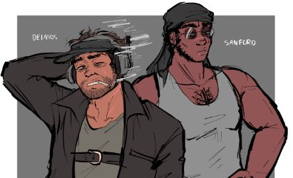
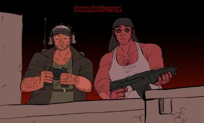
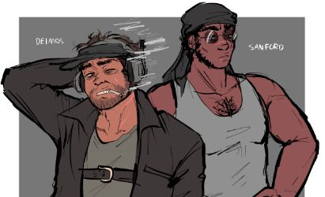
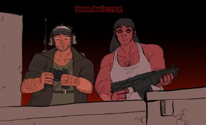
{kind=link}
{kind=link}


 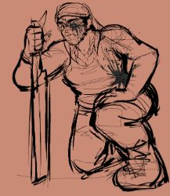
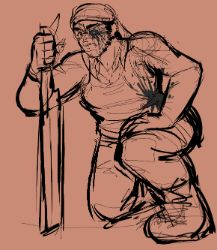
{kind=link}

 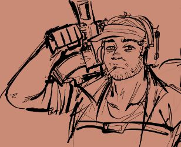
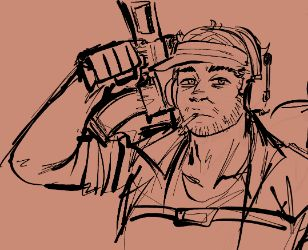
{kind=link}
Sanmos charms!
I recently made some cute lil acrylic charms of Sanford & Deimos(with permission granted by Krinkels)! If you like my little guys, consider purchasing the set by clicking the image below!

Videos where NOTHING BAD HAPPENS
Sanford has some of the BEST LINES IN THE GAME. Deimos doesn't have many spoken lines but his voice is a real one-hit KO.
These are all the official videos where the boys are killing folks and doing other stuff together. And nothing bad happens in them.
...
Well maybe just one....
Fun facts
- Krinkels said he made Sanford and Deimos because "duos are hip as hell" (so true!)
- Sanford is a huge mama's boy.
- Deimos is able to light his cigarettes with a flame coming from his thumb. Alot of people interpret him as having fire powers because of this.
- Krinkels gave Sanford a hook because they are "horrible and painful".
- Deimos doesn't vape.
- Apparently Sanford could beat Hank and Deimos in a spicy chicken wing eating contest.
- Krinkels said that if he had to delete one character from the series, it would be Deimos, since he's a "MURDERER and a SMOKER"
- Sanford and Deimos don't have last names.
- If they got into an arm wrestling contest, Sanford would beat Deimos easily.
- Sanford is taller than Deimos but shorter than Hank.
- Deimos' backpack stores communication/interface equipment and snacks.
- The characters in DedmosRebuilt.fla are tall because Deimos is a "manlet".
- Sanford prefers sriracha or buffalo sauce on his wings.
- Sanford and Deimos are referred to with he/him and they/them pronouns by Krinkels.
- Deimos could beat the others in a foot race (given nobody used their powers).
- Deimos seems to be a former agent of the A.A.H.W., while Sanford's origin is unknown.
- Sanford has a tattoo on his back that looks vaguely like a DNA helix.
- Deimos can pull off some sick skateboard tricks.
- Krinkels has commented that he doesn't see Deimos as being white.
Playlist!
I recently finally finished putting together this Sanmos playlist I made. I'd like to think that they both like R&B, Sanford likes 80's pop, and Deimos likes 90's rap and neo-soul. This is the car playlist they would make. Imagine this playing during the intro to Aggregation.